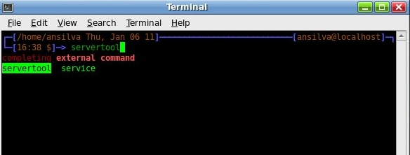

The reason why I have switched to zsh - Part 1
By Anderson Silva and Matt Woodson
The short answer: It's all Matt's fault!
The proper article-formatted answer: I've been a one-shell kind of person for the past 15 years using bash on Linux (and more recently on Mac OS X as well). Over the years, I have blown the minds of so many Windows users with the power of the shell that I cannot help but smile when I think about it. Yet I have never given much thought to other shells. Although, for the record, I didn't just start using bash because it was the default option on my Linux distribution of choice. My uncle, back in 1995, introduced me to Linux and csh, which was his choice of shell at the time. I've also played around with tcsh as well, but it just did not stick with me. I am going to guess that having bash as the default shell on my distribution helped, but it wasn't the defining factor. Maybe the fact that there are so many examples, articles and books written about bash programming contributed to my affection for bash over the years.
Then at work, a new guy came onto my team and over time started to show all of us the kinds of things he can do with zsh to make his life a bit less annoying, and his work a bit more efficient as a release engineer/programmer/system administrator.
As the New Year approached, I decided I wanted learn about something new, fun, yet relevant to my job; something that I could research on my own, and maybe even write an article about. (Note: the key word for me here is fun; there's plenty of stuff to learn about in the Linux world, but so much of it I find it so boring. Shells isn't one of those things :-))
In early January, I approached Matt, the new guy, and asked him to give me a tour of the zsh. Not only did he gave me an overview of the things zsh can do, on top of the virtually backward compatible functionality with bash, he also took my .bashrc file and converted it to a .zshrc with quite a few goodies added to it.
These 'goodies' are the reason I am sticking with zsh, and the reason why Matt and I are writing this series of articles to share them with you.
First Things First
Before showing you some tricks on zsh, let's make sure you can run it:
To install on Fedora:
$ yum install zsh
To install on Ubuntu:
$ apt-get install zsh
Create a .zshrc before starting zsh
Now that zsh has been installed, and assuming you have never ran zsh before, let me give you the first tip Matt gave me regarding zsh: "Skip the .zshrc wizard menu, find an existing .zshrc instead."
The wizard menu to create a .zshrc can be a bit overwhelming, but feel free to try it out. Matt has been kind enough to make his .zshrc available to the public, so you can download it and start your zsh experience at full speed. Throughout the next few months, we will go through some of his zsh settings as well.
Download Matt's .zshrc.
Starting zsh
You can manually switch to zsh any time, if all you want to do it give it a try:
$ zsh
Or if you want to make zsh your default shell:
$ chsh Changing shell for afsilva. Password: New shell [/bin/bash]: /bin/zsh
Now, zsh should be your default shell the next time you login.
The Goodies
Hopefully you are up and running on zsh now, and I should be able to share some of the first things that Matt showed me when he introduced me to zsh. They are:
Changing the prompt
Many of zsh functions come in the form of loading zsh shell function modules. One of the modules that can be seen immediately is the promptinit module. Using this promptinit module, you can quickly change the default zsh prompt:
To load the prompt shell functions:
$ autoload -U promptinit
$ promptinit
You can see the available prompts by running the command:
$ prompt -l Currently available prompt themes: adam1 adam2 bart bigfade clint elite2 elite fade fire off oliver pws redhat suse walters zefram
To use or tryout a prompt:
$ prompt redhat
Intelligent tab completion (more than bash)
I am a Fedora user, which is a Red Hat based distribution, and if you are familiar with either of them, you know that the proper way to restart a service is to run:
$ service some_service restart
But, in my laziness, I always used:
$ /etc/init.d/some_service restart
This is because I want bash to auto complete 'some_service' when I enter 'som' and hit tab afterwards. If I use the proper way, I have to spell out the service name, which I usually forget or mistype.
Well, in zsh, hitting tab will not only auto-complete a command name, but it will also auto-complete or give you options for parameters on many major commands you may use on a daily basis.
So, something like:
$ servi<tab> some<tab> res<tab>
Will auto-complete your request to:
$ service some_service restart
I don't care who you are, that's nice right there! :-)
Menu listing of options used with tab completion
If you are used to tab auto-complete in bash, you should know that if bash isn't able to find the unique command that matches your entry, it will tell you the other commands it has found in its PATH. Like:
$ serv<tab> servertool service
In zsh, when it finds more than one matching command or parameter (wink, wink) it will give you selectable menu of the available options when you hit tab twice, and you can use the arrow keys to navigate through the options and take your pick.

Enabling Auto-completion and Menu listing:
To enable the features above, add the following lines to your ~/.zshrc:
autoload -Uz compinit
compinit
Next month, Matt and I will write some more about about other zsh features like: spelling correction, globbing, aliases, floating point math, and setting version control information on your prompt. Meanwhile, feel free to look around zsh website and the man pages (man zshall, for the meta man page).
| Share |

|
Talkback: Discuss this article with The Answer Gang
Anderson Silva
![[BIO]](../gx/authors/silva.jpg)
Anderson Silva works as an IT Release Engineer at Red Hat, Inc. He holds a BS in Computer Science from Liberty University, a MS in Information Systems from the University of Maine. He is a Red Hat Certified Architect and has authored several Linux based articles for publications like: Linux Gazette, Revista do Linux, and Red Hat Magazine. Anderson has been married to his High School sweetheart, Joanna (who helps him edit his articles before submission), for 11 years, and has 3 kids. When he is not working or writing, he enjoys photography, spending time with his family, road cycling, watching Formula 1 and Indycar races, and taking his boys karting,
Matt Woodson
![[BIO]](../gx/2002/note.png)
Matt Woodson works as an IT Software Enginner at Red Hat, Inc. Matt has been involved with many different postitions at multiple Linux companies including Red Hat, Novell, and Caldera. He has done jobs that range from systems administration, networking, to quality engineering. He is a Red Hat Certified Engineer, who spent time teaching RHCE classes in all parts of the country. Matt, and his wife Mariah, of 3 years, are expecting their first daughter in Feb 2011.